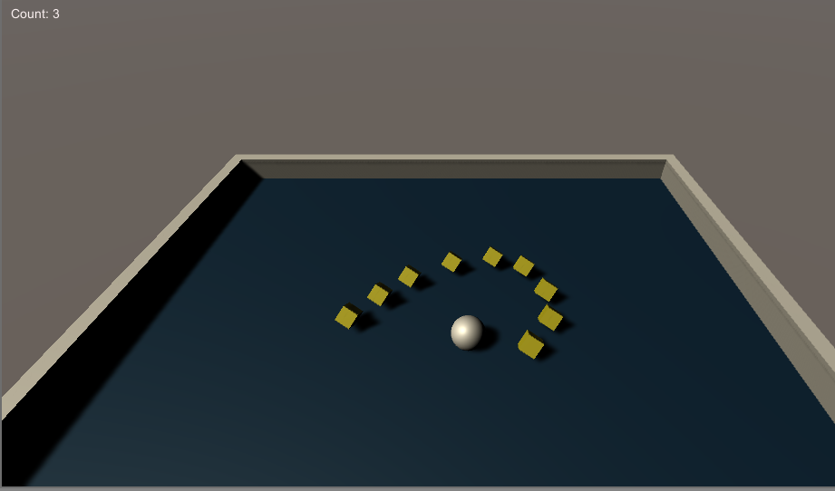
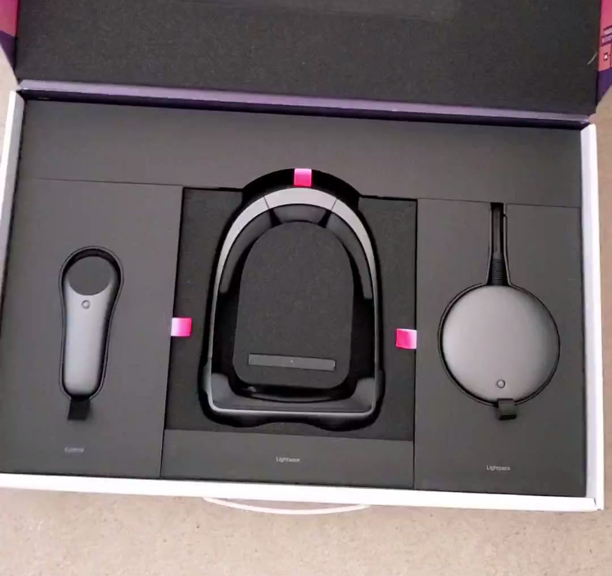
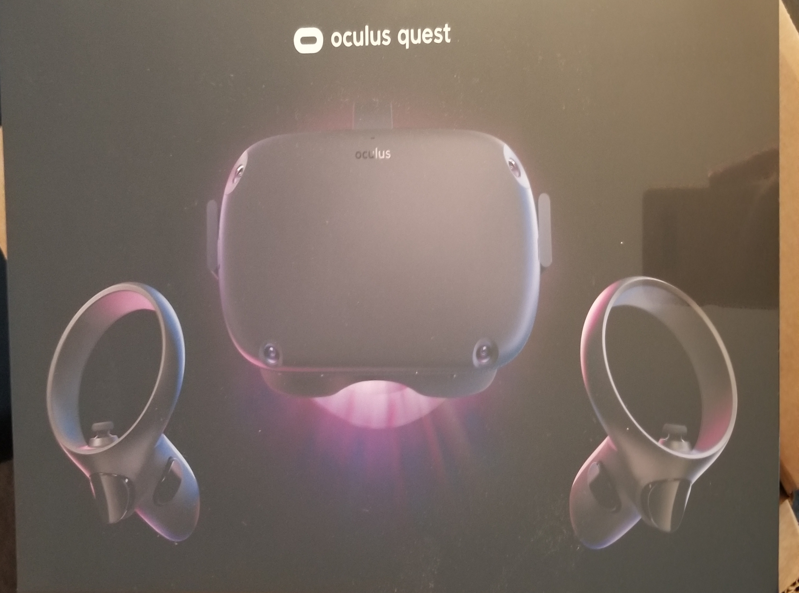

Learning Unity
The project has started off right where it should, with a healthy amount of Unity tutorials. Our team members are fairly new to Unity and to get things rolling we started with a tutorial called RollaBall, giving us exposure to fundamental unity API functions for working with game objects within the editor.
After having fun creating our first game in unity we learned how to set up a scene in the editor for various VR/AR platforms via Unity's asset store.
Taking the Leap
The entire team was excited to hear that everyone in the capstone would receive a Magic Leap One to test the capabilities of remote AR collaboration during the pandemic quarantine. It is amazing to have the opportunity to experiment with this technology and potentially incorporate it into our projects.
Embarking on our Quest
Exploring the Oculus Quest is another first for the team. The mobility and accessibility of the Quest is of great interest to the group and we are excited to how we can use this innovative new frontier of wireless VR in our project.
 .Wind in the Sails
Brainstorming ideas for our project's focus was more difficult than we anticipated having both VR and AR headsets at our disposal. During the initial discussions, it was clear that we wanted to create an application that would allow users to be social with one another and use the XR technologies to bridge the isolation everyone is facing.
During our discussions we discovered a common interest for the outdoors and we are fortunate to live in an area with many beautiful natural features. From the inspiration of the Puget Sound, Hands on Deck, a VR sailing experience, was born.
Team 6 is very excited to be taking on this project and welcomes you to follow us on our development through these blog posts.